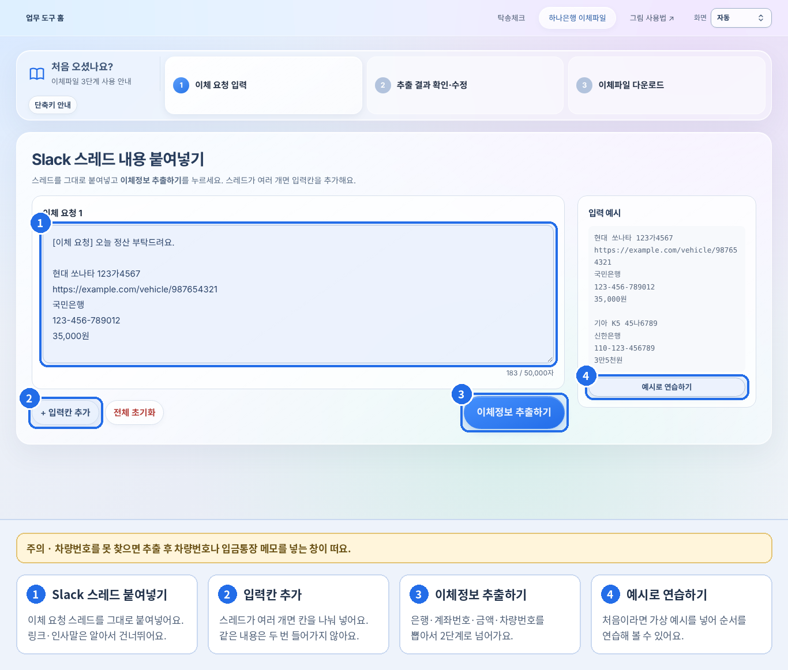
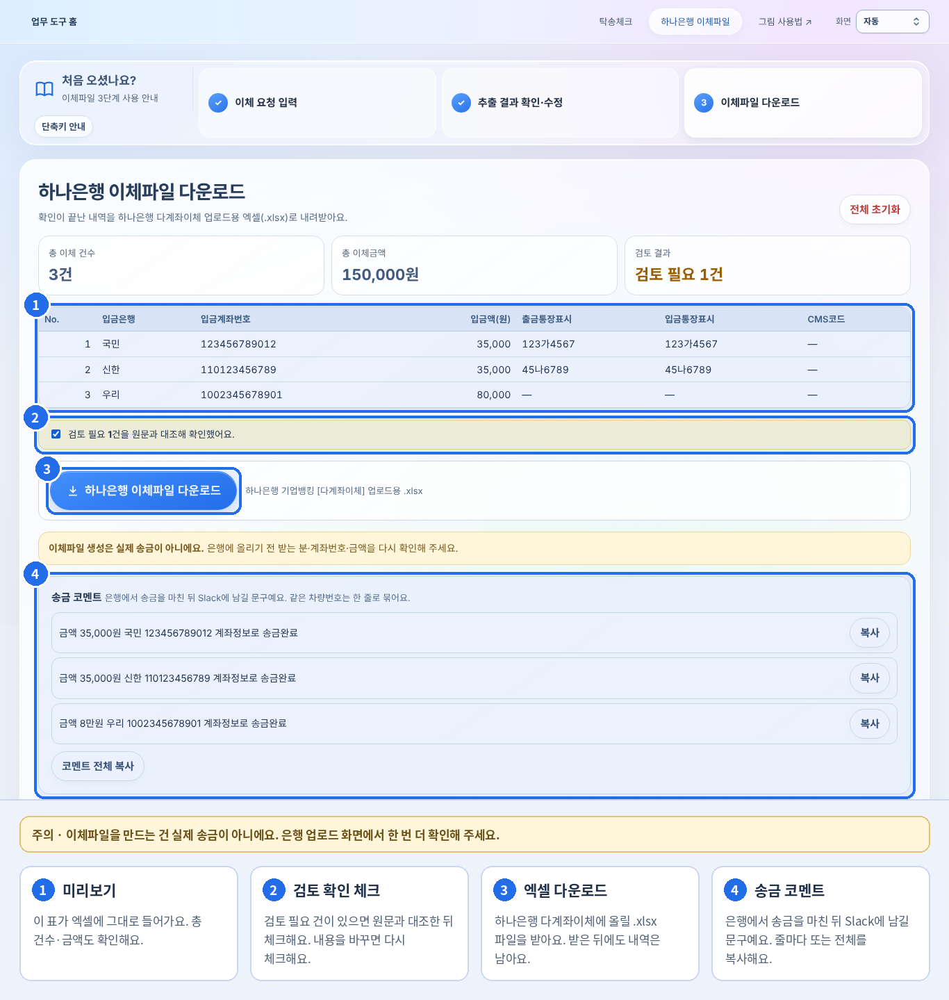

QUICK VISUAL GUIDE
설명서 대신 화면을 보면서 따라 하세요
실제 WorkTool 화면에 번호·파란 테두리·설명을 덧붙였어요. 그림의 번호와 아래 설명의 번호가 같아요. 이미지를 누르면 크게 볼 수 있고, 설명 없는 원본 화면도 볼 수 있어요.
차량번호 스크립트 실행부터 3사 시트 첨부까지
WorkTool에서 조회하기 전에 필요한 원본을 준비하는 순서예요. 차량목록은 사내 스크립트에서, 업체파일은 탁송 3사 조회 화면에서 가져와요.
차량목록 = ‘탁송출발 주유비 미입력’ 스크립트
- 사내 탁송출발 주유비 미입력 스크립트를 실행해요.
- 조회 결과에서 차량번호를 추출하고 복사해요.
- WorkTool의 차량목록 입력 칸에 붙여넣어요.
결과: 조회할 차량번호 목록이 준비돼요.
업체파일 = 탁송 3사 ‘탁송기한’ 조회 시트
- 한빛탁송 · 오픈마일 · 렌톡에서 각각 탁송기한을 조회해요.
- 대상 기간을 선택하고 조회 후 시트 다운로드를 진행해요.
- 다운로드한 시트 3개를 WorkTool 업체 파일 첨부에 넣어요.
결과: 차량번호와 비교할 업체별 원본 파일이 준비돼요.
렌톡은 반드시 확인: 시트 조회 기준을 ‘요청시각’에서 ‘출발시각’으로 변경한 후 대상 기간을 설정해 다운로드하세요. 세 업체의 조회 기간이 맞는지도 확인해 주세요.

- 차량목록 붙여넣기
스크립트에서 복사한 차량번호를 차량목록 입력에 붙여넣어요. 날짜·시간이 같이 있어도 돼요.
- 업체 파일 첨부
3사 '탁송기한' 시트를 업체 파일 첨부에 끌어다 놓고, 인식한 업체와 건수를 확인해요.
- 차량 조회하기
누르면 차량번호마다 가장 최신 탁송 기록을 찾아 금액을 정리해요.
- 결과 한눈에 보기
전체·금액 확인·미조회·제주 출발·캐리어 대수예요. 카드를 누르면 그 차량만 보여요.
- 걸러 보기
확인 필요 탭부터 보세요. 일정·비용이 여러 개인 차량은 표에서 직접 골라요.
- 복사·저장
저장 범위를 고르고 TXT·엑셀·PDF로 받아요. 차량번호만 필요하면 위쪽 차량번호 복사를 눌러요.
조회 상태와 일정·비용 선택 기준은 탁송체크 상세 사용방법에서 확인하세요.
이체파일은 이 순서대로 만드세요
Slack 이체 요청을 붙여넣고, 계좌·금액을 확인한 다음 Excel 파일을 저장해요. 예시로 연습하기 데이터로 찍은 실제 화면이에요.
한 화면에서 ① 원문 입력 → ② 내역 검토 → ③ Excel 다운로드 순서로 진행해요. 새로고침하면 입력 내용이 지워지니 받기 전에는 창을 닫지 마세요.

- Slack 스레드를 그대로 붙여넣어요.
- 스레드가 여러 개면 입력칸을 추가해요.
- 이체정보 추출하기를 누르면 2단계로 넘어가요.
- 처음이라면 예시로 연습하기로 연습해요.

- 정상·검토·오류 건수를 보고, 누르면 그 줄만 모아 봐요.
- 은행·계좌·금액을 원문과 대조하고 칸을 눌러 고쳐요.
- 통장 메모와 CMS코드를 한 번에 넣어요.
- 빨간 오류를 다 고친 뒤 다음 단계로 가요.

- 미리보기 표가 엑셀에 그대로 들어가요.
- 검토 필요 건이 있으면 원문과 대조한 뒤 체크해요.
- 하나은행 이체파일 다운로드로 .xlsx를 받아요.
- 은행에서 송금을 마친 뒤 Slack에 남길 송금 코멘트를 복사해요.
꼭 확인하세요. 이체파일은 송금 예약이나 실행이 아니에요. 실제 은행 업로드 화면에서 수취인·계좌번호·금액을 다시 확인해야 해요. 차량번호가 없다면 팝업에서 차량번호 또는 입금통장에 표시할 이체 메모를 입력할 수 있어요.
하나은행 이체파일 열기 →